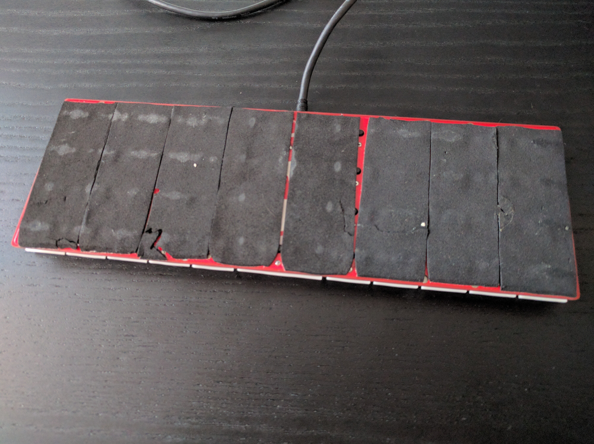

Assembly¶
Published on 2020-09-29 in Dorsch 48k Keyboard.
Since I forked this project from Dorsch 40k Keyboard , most of the technical details are there, so I thought it makes sense to repeat it a little bit. I decided on a very minimal design — just the PCB, no support plate and no case.
So this is basically just the PCB with the switches soldered directly on it. The microcontroller had to be squeezed in there between the switches, because the back needs to stay flat, so that I can cover it with foam stickers.
They don’t look so great because I had to remove and re-attach them a couple of times while I worked on the keyboard. They look much better freshly applied, but I didn’t take that photo.
Since the USB port didn’t fit between the keys, I decided to go with a permanently attached USB cable. It’s soldered to the header, and then glued to the PCB using a glue-soaked fabric ribbon, which also acts as stress relief for the cable.